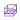
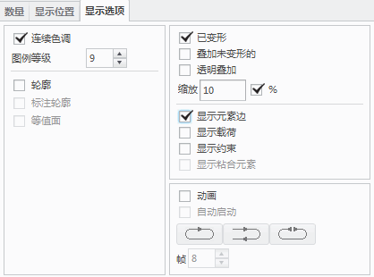

练习: 使用连接工具连接壳中间曲面装配
目标
成功完成此练习后，您将能够：
- 使用壳理想化。
- 使用焊缝连接装配的零件。
假定背景
在本练习中，您将分析由钣金元件组成的装配中的应力和变形。与宽度/长度相比，要分析的几何的厚度较小且使用了壳理想化。因此，它允许您快速找到解而不使用默认的实体元素。
该模型是在 Creo Parametric 中将多个零件装配到一起而形成的装配。在模型的一些位置中，板较短，因此连接零件之间存在间隙。在模型中定义这些间隙以弥补焊接制造公差。因此，不会像在曲面以 0 偏移或间隙配对的任何其他区域中一样自动连接板。
“关闭窗口”(Close Window) “拭除未显示的”(Erase Not Displayed)
“拭除未显示的”(Erase Not Displayed) 
 Simulate_Modeling\Connection
Simulate_Modeling\Connection
WELDED_CANTILEVER_SIMULATE.ASM
|
|
||
 |
Creo Parametric 用户打开 WELDED_CANTILEVER.ASM | |
|
|
||
-
任务 1. 定义壳对理想化。
1. 在功能区中，选择“精细模型”(Refine Model) 选项卡。
2. 单击“理想化”(Idealizations) 组的“壳对”(Shell Pair) 下拉菜单，然后选择“检测壳对”(Detect Shell Pairs)。“自动检测壳对”(Auto Detect Shell Pairs) 对话框随即出现。
3. 校验“使用几何分析”(Use Geometry Analysis) 已被选中。
4. 在“特征厚度”(Characteristic Thickness) 字段中键入 5。
5. 在模型树中，选择 WELDED_CANTILEVER.ASM 以为壳理想化选择装配的所有元件。
6. 在“自动检测壳对”(Auto Detect Shell Pairs) 对话框中，单击“开始”(Start)。
7. 在模型树中，展开“理想化”(Idealizations) 和“壳对”(Shell Pairs)。请注意，根据相对曲面相距 5 mm 这一规则检测到 13 个壳对。
8. 单击每个壳对以在模型中标识其位置。
9. 在功能区中，选择“精细模型”(Refine Model) 选项卡。
10. 从 AutoGEM 组中单击“审阅几何”(Review Geometry) 。“模拟几何”(Simulation Geometry) 对话框随即出现。
11. 单击“应用”(Apply)。请注意已壳理想化的板的显示，如图所示。
请注意，未能成功压缩 LUG.PRT 和 CYLINDER.PRT 的一些区域。前者是由于可变的厚度，后者是因为厚度大于 5 mm。
12. 在“模拟几何”(Simulation Geometry) 对话框中，单击“关闭”(Close)。

-
任务 2. 定义手动和可变壳对理想化。
1. 在模型树中选择 LUG.PRT。单击鼠标右键并选择“打开”(Open)。零件将在单独的 Creo Simulate 窗口中打开。
2. 在功能区中，选择“精细模型”(Refine Model) 选项卡。
3. 在“理想化”(Idealizations) 组中单击“壳对”(Shell Pair) 。“壳对定义”(Shell Pair Definition) 对话框随即出现。
4. 校验已在“类型”(Type) 部分选择了“常量”(Constant)，且在“参考”(References) 部分选择了“自动选择相对曲面”(Auto Select Opposing Surfaces)。
5. 在模型中，选择显示的曲面。
6. 在“壳对定义”(Shell Pair Definition) 对话框中，单击“重复”(Repeat) 创建此壳对并清除该对话框以创建新壳对。
7. 在“类型”(Type) 部分中，选择“变量”(Variable)。
8. 在模型中，选择显示的曲面。
9. 按住 CTRL 键并选择相对的倾斜曲面。
10. 要为中间平面放置拾取参考，请单击“选择放置曲面”(Select a placement surface) 字段。在模型树中选择 DTM1。
11. 在“壳对定义”(Shell Pair Definition) 对话框中，单击“重复”(Repeat) 创建此壳对并清除该对话框以创建新壳对。
12. 在“类型”(Type) 部分中，选择“常量”(Constant)。校验“自动选择相对曲面”(Auto Select Opposing Surfaces) 已被选中。
13. 在模型中，选择显示的曲面。
14. 单击“接受”(Accept)
 。
。
15. 在模型树中，展开“理想化”(Idealizations) 和“壳对”(Shell Pairs)。请注意，创建了三个壳对。
16. 在功能区中，选择“精细模型”(Refine Model) 选项卡。
17. 从 AutoGEM 组中单击“审阅几何”(Review Geometry) 。“模拟几何”(Simulation Geometry) 对话框随即出现。
18. 单击“应用”(Apply)。请注意已壳理想化的板的显示，如图所示。
19. 单击“关闭”(Close)。
20. 单击“文件”(File) > “保存”(Save)。“保存对象”(Save Object) 对话框随即出现。
21. 使用默认的名称并单击“确定”(OK)。
22. 单击“文件”(File) > “关闭”(Close)
以关闭该窗口并返回到主装配窗口。
-
任务 3. 校验并查看自动和手动创建的壳对。
1. 在功能区中，选择“精细模型”(Refine Model) 选项卡。
2. 从 AutoGEM 组中单击“审阅几何”(Review Geometry) 。“模拟几何”(Simulation Geometry) 对话框随即出现。
3. 单击“应用”(Apply)。请注意已壳理想化的板的显示，如图所示。
4. 单击“关闭”(Close)。
-
任务 4. 定义焊缝以连接模型中的板。
1. 在功能区中，选择“精细模型”(Refine Model) 选项卡。
2. 从“连接”(Connections) 组中单击“焊缝”(Weld) 。“焊缝定义”(Weld Definition) 对话框随即出现。
3. 从“端焊缝类型”(End Weld Type) 下拉菜单中选择“多对单延伸”(Extend Many to Single)。
4. 单击“参考”(References) 部分中的“曲面”(Surfaces) 字段。按住 CTRL 键，并在模型中选择所显示的四个曲面。
5. 在“曲面”(Surface) 字段中单击。在模型中，选择显示的曲面。
6. 单击“确定”(OK)。
7. 在功能区中，选择“精细模型”(Refine Model) 选项卡。
8. 从 AutoGEM 组中单击“审阅几何”(Review Geometry) 。“模拟几何”(Simulation Geometry) 对话框随即出现。
9. 单击“应用”(Apply)。请注意连接，如图所示。单击“关闭”(Close)。
10. 在功能区中，选择“精细模型”(Refine Model) 选项卡。
11. 从“连接”(Connections) 组中单击“焊缝”(Weld) 。“焊缝定义”(Weld Definition) 对话框随即出现。
12. 从“类型”(Type) 下拉菜单中选择“周边焊缝”(Perimeter Weld)。
13. 单击“参考”(References) 部分中的第一个“曲面”(Surface) 字段。在模型中，选择显示的曲面。
14. 单击“参考”(References) 部分中的第二个“曲面”(Surface) 字段。在模型中，选择显示的曲面。
15. 单击“属性”(Properties) 部分中的“边”(Edges) 字段。在模型中，选择显示的两条边。
16. 单击“确定”(OK)。
17. 在功能区中，选择“精细模型”(Refine Model) 选项卡。
18. 从 AutoGEM 组中单击“审阅几何”(Review Geometry) 。“模拟几何”(Simulation Geometry) 对话框随即出现。
19. 单击“应用”(Apply)。请注意连接，如图所示。单击“关闭”(Close)。
20. 启用“点显示”(Point Display)
 。
。
21. 在功能区中，选择“精细模型”(Refine Model) 选项卡。
22. 从“连接”(Connections) 组中单击“焊缝”(Weld) 。“焊缝定义”(Weld Definition) 对话框随即出现。
23. 从“类型”(Type) 下拉菜单中选择“点焊”(Spot Weld)。
24. 单击“参考”(References) 部分中的第一个“曲面”(Surface) 字段。在模型中，选择显示的曲面。
25. 单击“参考”(References) 部分中的第二个“曲面”(Surface) 字段。在模型中，选择显示的曲面。
26. 在“属性”(Properties) 部分中选择“阵列”(Pattern)。选择阵列中的任意点。
27. 在“直径”(Diameter) 字段中键入 8。
28. 在“材料”(Material) 部分，单击“更多”(More)。将出现“材料”(Materials) 对话框。
29. 选择并根据需要将 steel.mtl 添加为材料。单击“确定”(OK)。
以返回到“焊缝定义”(Weld Definition) 对话框。
30. 单击“确定”(OK)。图形表示如图所示。
如果在定义“点焊”连接后利用“审阅几何”工具，则将不会看到模型中的任何更改。这些连接将不显示为所创建的周边焊缝或端焊缝的连接。
-
任务 5. 定义剩余的载荷。
1. 在功能区中，选择“主页”(Home) 选项卡。
2. 在“载荷”(Loads) 组中单击“承载”(Bearing)
 。将出现“承载载荷”(Bearing Load) 对话框。
。将出现“承载载荷”(Bearing Load) 对话框。
3. 从“参考”(References) 下拉菜单中选择“边/曲线”(Edges/Curves)。
4. 在模型中，选择任何弯曲边，如图所示。
软件将自动选择剩余的一半孔边。因此，两条边将显示在选择查询范围中。
5. 在“力”(Force) 部分的 Y 字段中键入 -30000。
6. 单击“确定”(OK)。

-
任务 6. 定义约束。
1. 在模型树中，展开载荷/约束和载荷集 ConstraintSet1。
2. 右键单击 Constraint1，然后选择“编辑定义”(Edit Definition)。将出现“约束”(Constraint) 对话框。
3. 按住 CTRL 键并选择边，如图所示。
4. 单击“确定”(OK)。
-
任务 7. 定义并运行静态分析。
1. 在功能区中，选择“主页”(Home) 选项卡。
2. 在“运行”(Run) 组中单击“分析和研究”(Analyses and Studies)
 。将出现“分析和设计研究”(Analyses and Design Studies) 对话框。
。将出现“分析和设计研究”(Analyses and Design Studies) 对话框。
3. 单击“文件”(File) > “新建静态分析”(New Static)。将出现“静态分析定义”(Static Analysis Definition) 对话框。
4. 完成以下步骤：
- 在“名称”(Name) 字段中键入 welded_cantilever。
- 选择在“约束集/元件”(Constraint Set/Component) 和“载荷集/元件”(Load Set/Component) 部分中显示的约束集和载荷集。
- 单击“收敛”(Convergence) 选项卡，然后从“方法”(Method) 下拉菜单中单击“单通道自适应”(Single-Pass Adaptive)。
- 单击“高级控制”(Advanced Control)。“高级 SPA 收敛控制”(Advanced SPA Convergence Control) 对话框随即出现。完成以下步骤：
- 选择“使用高级控制”(Use Advanced Controls)。
- 在“最大应力误差目标”(Maximum Stress Error Target) 字段中键入 8。
- 在“局部应力误差目标”(Local Stress Error Target) 字段中键入 10。
- 不要为“局部应力误差”(Local Stress Error) 字段选择任何参考。
- 在“高级 SPA 收敛控制”(Advanced SPA Convergence Control) 对话框中，单击“确定”(OK) 以返回至“静态分析定义”(Static Analysis Definition) 对话框。
- 单击“输出”(Output) 选项卡。
- 在“绘制栅格”(Plotting Grid) 字段中键入 4。
5. 单击“确定”(OK) 返回到“分析和设计研究”(Analyses and Design Studies) 对话框。
6. 单击“配置运行设置”(Configure Run Settings)
 。将出现“运行设置”(Run Settings) 对话框。
。将出现“运行设置”(Run Settings) 对话框。
7. 默认情况下，结果和临时输出目录被设置在工作目录中。两种分析都储存在此位置。单击“确定”(OK)。
8. 在“分析和设计研究”(Analyses and Design Studies) 对话框中选择 welded_cantilever，然后单击“开始运行”(Start Run)
 。单击“是”(Yes) 以运行交互诊断。
。单击“是”(Yes) 以运行交互诊断。
9. 分析完成后，单击“显示研究状况”(Display Study Status) 查看汇总报告。
10. 关闭所有对话框并返回至“分析和设计研究”(Analyses and Design Studies) 对话框。
-
任务 8. 创建结果窗口并检查结果。
1. 在“分析和设计研究”(Analyses and Design Studies) 窗口中选择 welded_cantilever。
2. 单击“审阅结果”(Review Results)
 。将出现“结果窗口定义”(Result Window Definition) 对话框。
。将出现“结果窗口定义”(Result Window Definition) 对话框。
3. 完成以下步骤：
- 校验已将“条纹”(Fringe) 选定为“显示”(Display) 类型。
- 单击“数量”(Quantity) 选项卡。
- 校验“应力”(Stress) 已选定。
- 从下拉菜单中选择 MPa。
- 从“分量”(Component) 下拉菜单中选择 von Mises。
- 单击“显示选项”(Display Options) 选项卡。如图所示完成字段。
4. 单击“确定并显示”(OK and Show)。
5. 检查 von Mises 应力条纹图。标识连接的行为。
6. 创建最大位移大小的另一个结果窗口，并检查显示的结果。
7. 单击“文件”(File) > “退出结果”(Exit Results) 返回至 Creo Simulate。在“消息”(Message) 对话框中单击“否”(No)。
8. 在“分析和设计研究”(Analyses and Design Studies) 对话框中，单击“关闭”(Close)。
9. 单击“文件”(File) > “管理会话”(Manage Session) > “拭除当前”(Erase Current) 以关闭显示的窗口，并从内存中拭除模型。当提示您确认时，请单击“是”(Yes)。
练习就此结束。